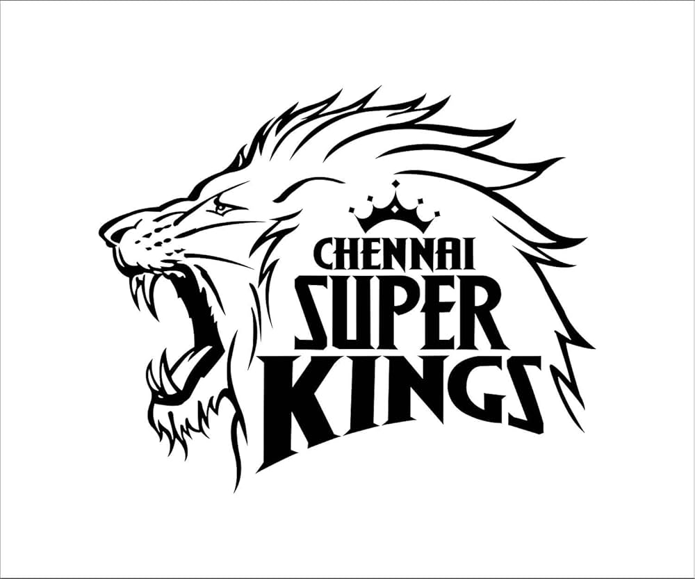

Chennai Super Kings (CSK) is a franchise cricket team that competes in the Indian Premier League (IPL). The team is based in Chennai, Tamil Nadu, and is one of the most successful teams in the history of the IPL. CSK has won multiple IPL titles and has a large fan base known as the "Yellow Army." The team is known for its consistent performances and has been led by legendary captain MS Dhoni for many years.
Chennai Super Kings, popularly known as CSK, is one of the most successful and famous teams in the Indian Premier League (IPL). The team was established in 2008 and is based in Chennai, Tamil Nadu. CSK plays its home matches at the M. A. Chidambaram Stadium, also called Chepauk Stadium. The team is owned by India Cements and is well known for its yellow jersey and loyal fan base called the “Yellow Army.” Under the leadership of legendary captain MS Dhoni, CSK won multiple IPL championships and became one of the strongest teams in IPL history.
Chennai Super Kings was founded in 2008 when the Indian Premier League (IPL) was started by the Board of Control for Cricket in India. The team is based in Chennai and is owned by India Cements. From the beginning, CSK became one of the strongest teams in the tournament under the captaincy of MS Dhoni. The team quickly gained popularity because of its consistent performances and loyal fan base known as the “Yellow Army.”
CSK reached the IPL finals in 2008 but lost to Rajasthan Royals. The team then won its first IPL title in 2010 by defeating Mumbai Indians and successfully defended the title in 2011 against Royal Challengers Bengaluru. These victories made CSK the first team to win back-to-back IPL championships.
Chennai Super Kings has had a strong squad over the years, with several star players contributing to their success. Some of the key players in the team include MS Dhoni (captain and wicketkeeper), Suresh Raina, Ravindra Jadeja, Dwayne Bravo, Faf du Plessis, and Shane Watson. The team has also had international stars like Michael Hussey, Albie Morkel, and Imran Tahir. CSK is known for its balanced team composition, with a mix of experienced players and young talent.